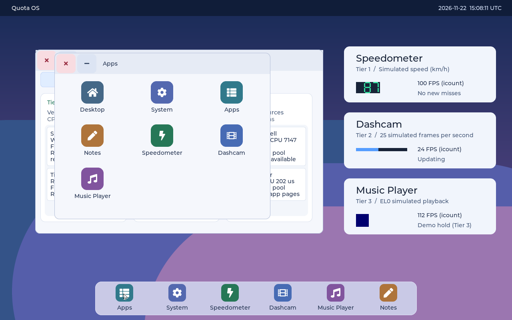
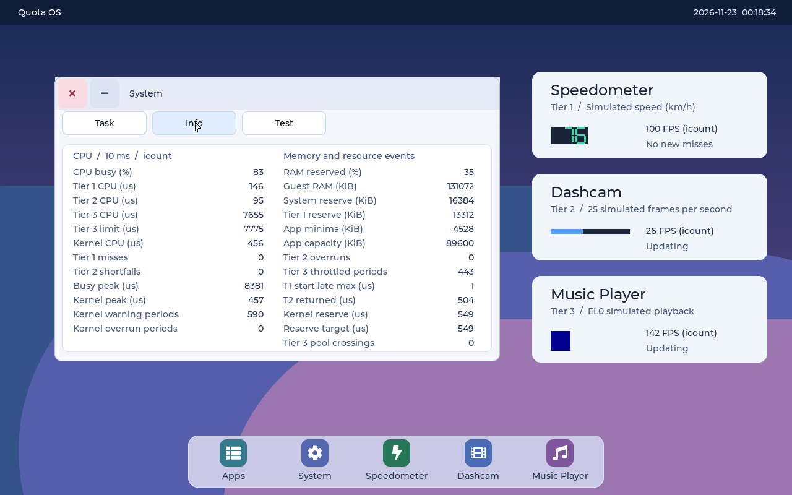
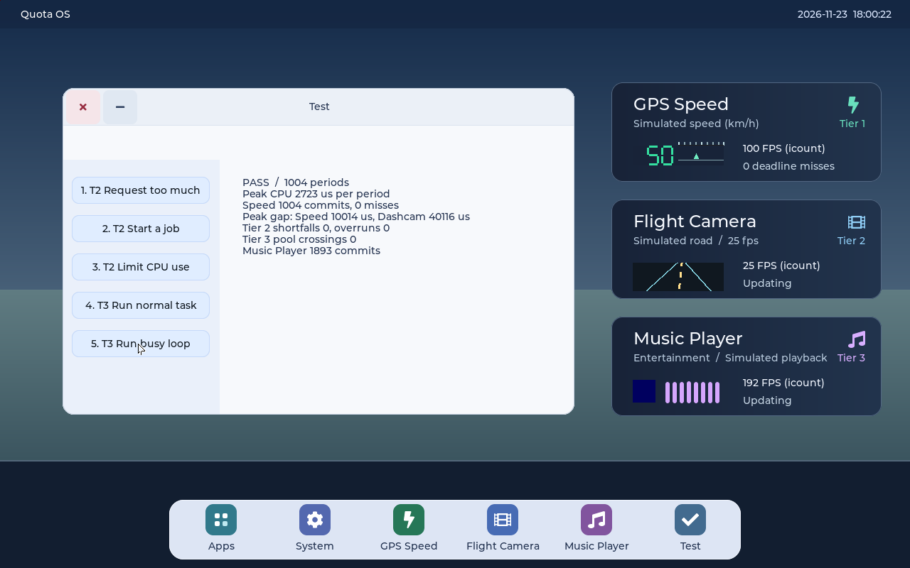

TIER 1
Vendor reserved
The speedometer and timer service use fixed CPU slots.
ARM64 / RESOURCE-PARTITIONED OS
Quota OS is an experimental ARM64 operating system. It reserves CPU time for critical tasks, admits applications against available capacity, and shares spare time among ordinary workloads.



TIER 1
The speedometer and timer service use fixed CPU slots.
TIER 2
The dashcam starts with user approval and sufficient capacity for its declared minimum.
TIER 3
Music and desktop interaction share remaining CPU time under a common cap.
This QEMU TCG icount test measured guest framebuffer commits. GPU queue timing, host presentation, and physical display latency await verification.
Install QEMU with ARM64 system emulation, then run these commands.
git clone https://github.com/leiquan/Quota-OS.git
cd Quota-OS
bash tools/run-files.sh